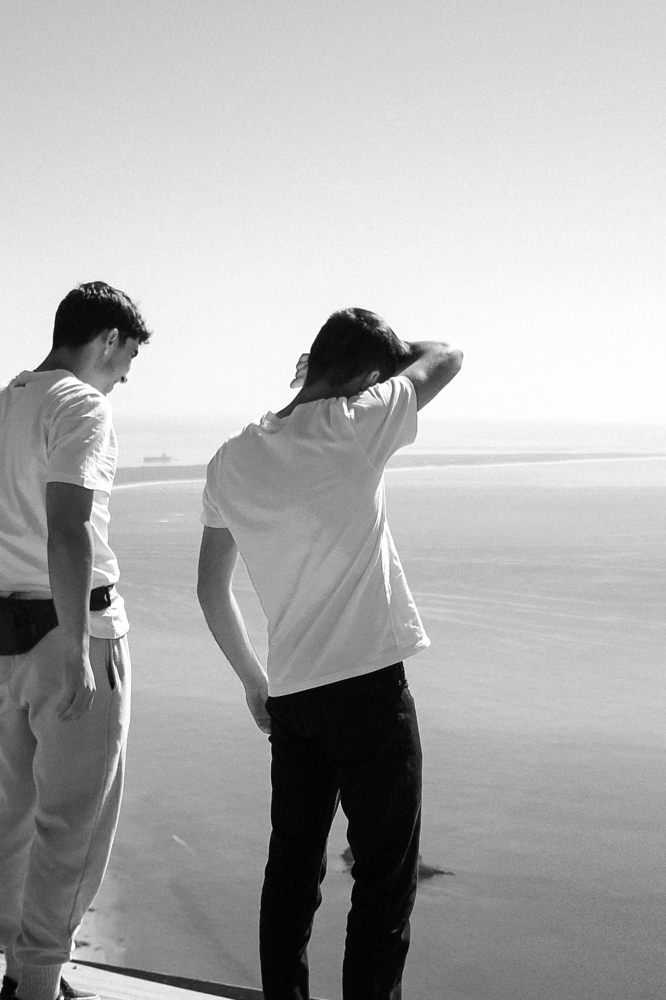
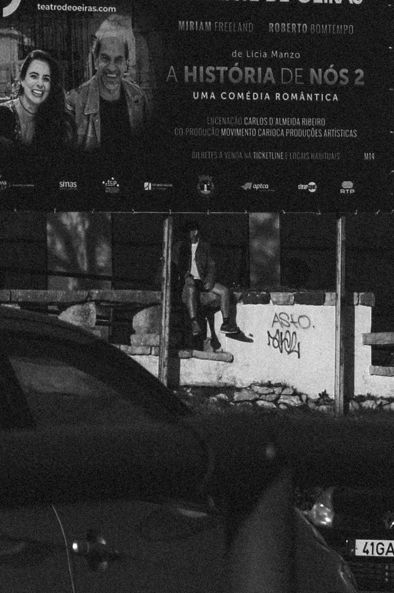
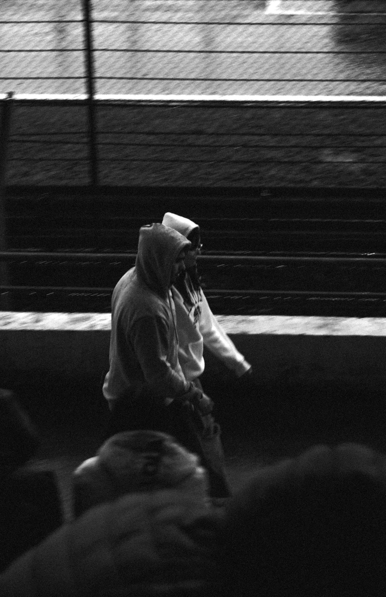
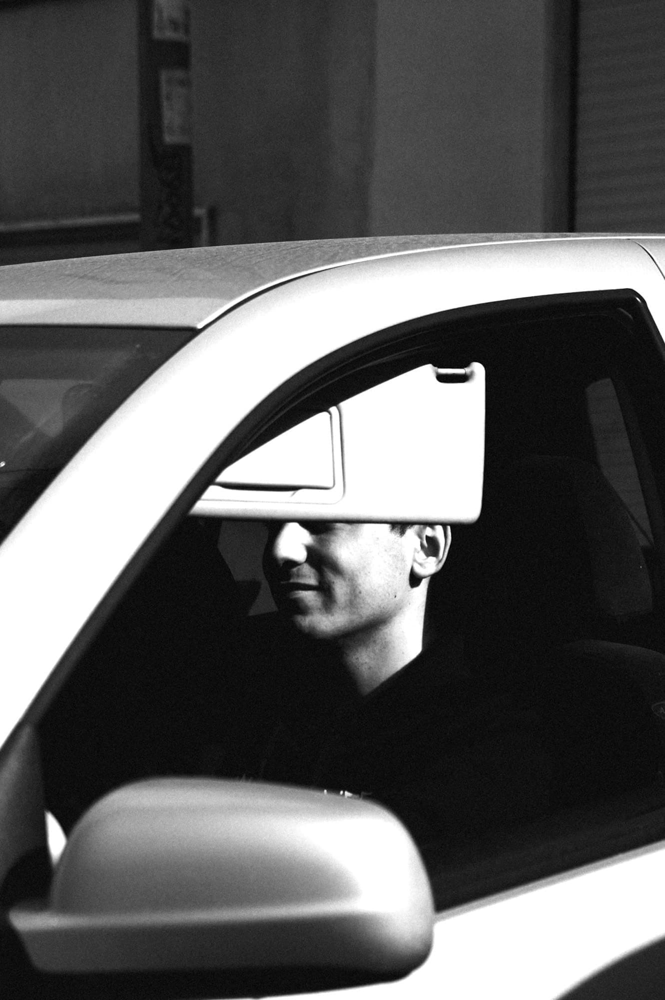
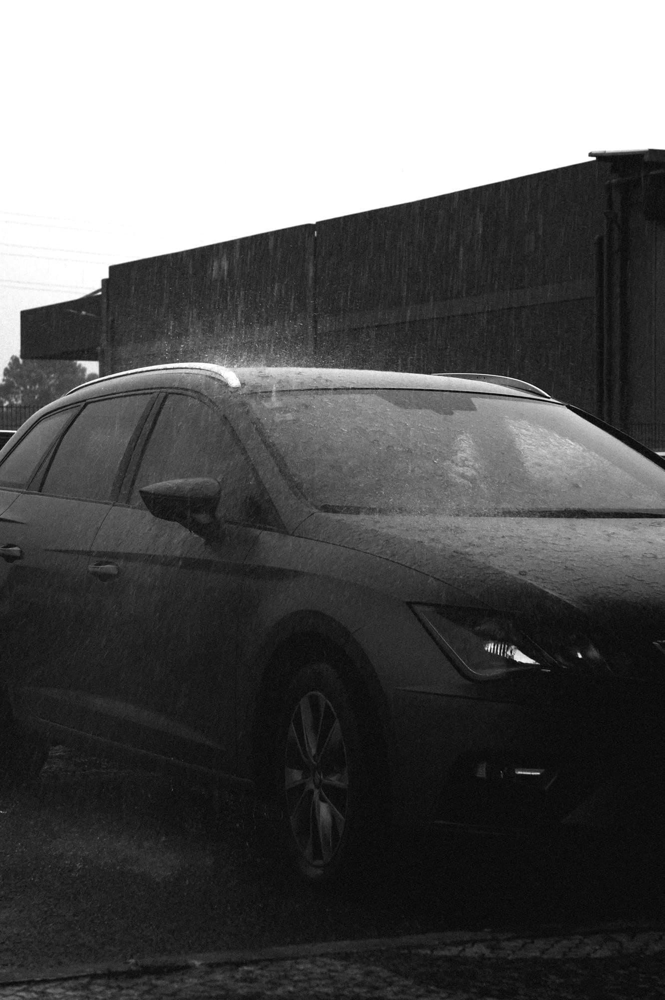

This photographic project seeks to challenge the conventional perception of hats, exploring them not merely as fashion accessories but as conceptual, functional, and artistic expressions — reimagining them as unexpected forms, shelters, meeting points, or wearable art.




